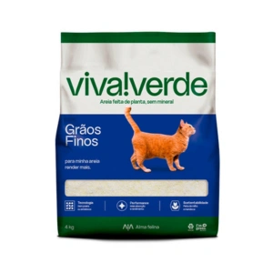

Areia Higiênica Viva Verde Grãos Finos para Gatos

- Preço
- R$ 59,49
- Indicação
- Gatos
- Formação de Torrão
- Torrão perfeito e instantâneo, sem formar lama e com zero desperdício
- Controle de Odor
- Eliminação imediata e duradoura do odor da urina
- Diferencial
- Sem poeira e com melhor rendimento